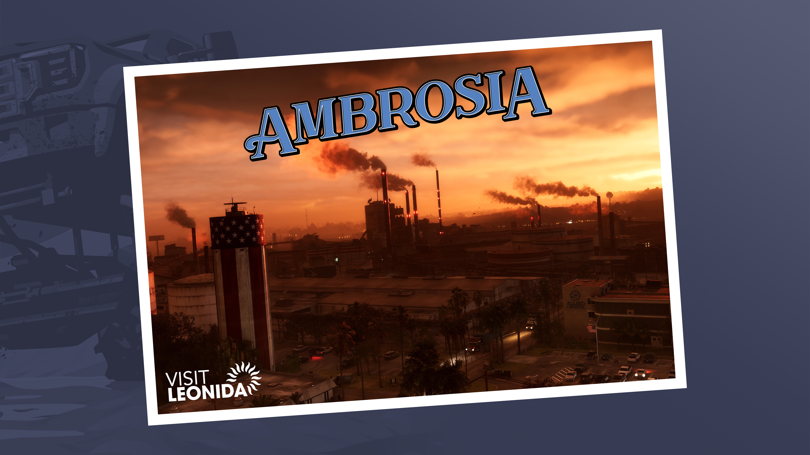
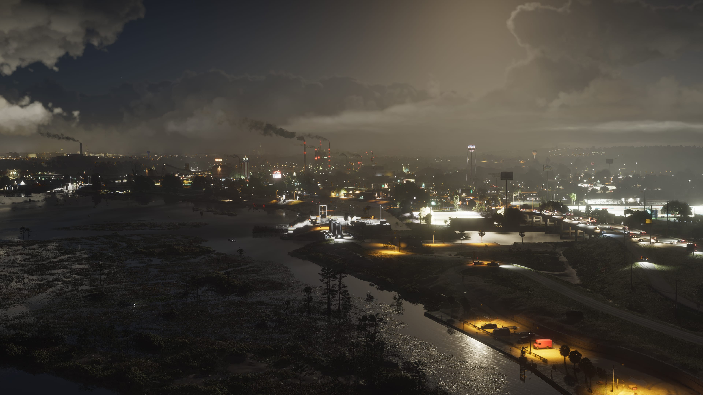
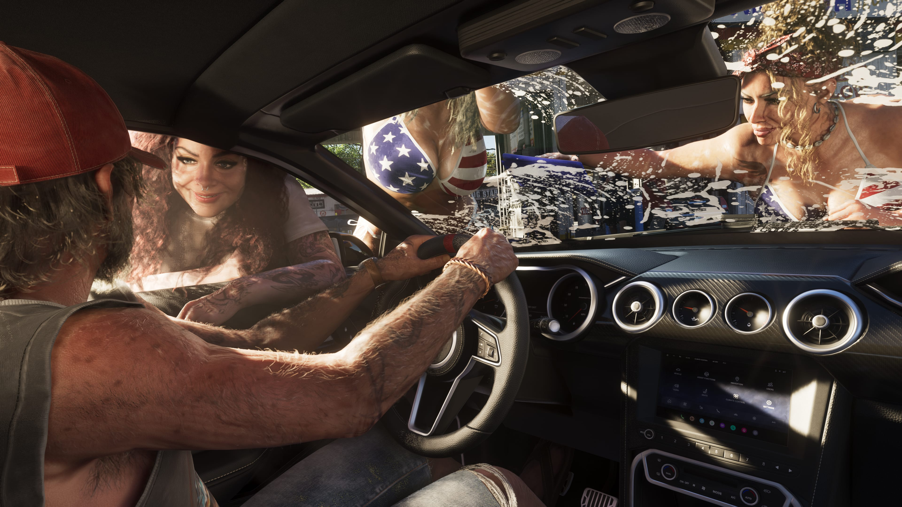

Ambrosia
Ambrosia é um dos destinos oficialmente apresentados pela Rockstar Games para Grand Theft Auto VI. Até o momento, a Rockstar divulgou imagens específicas da região e um postcard oficial, mas ainda existem muitos detalhes sobre Ambrosia que não foram explicados publicamente.

Um dos destinos de Leonida
Ambrosia aparece oficialmente entre os locais apresentados pela Rockstar Games dentro do estado de Leonida.
Diferentemente de outras áreas sobre as quais já existem descrições mais detalhadas, ainda há muitas informações de Ambrosia que a Rockstar não explicou em texto.
Por isso, nesta página o GTA6Zoone separa claramente aquilo que foi apresentado oficialmente daquilo que ainda permanece desconhecido.

CONFIRMADO: Ambrosia aparece oficialmente entre os destinos apresentados pela Rockstar Games em Leonida.

Ambientes apresentados pela Rockstar
A série oficial de screenshots de Ambrosia mostra ambientes bastante diferentes daqueles apresentados em regiões como Vice City e Leonida Keys.
Uma das imagens divulgadas pela Rockstar mostra uma grande área construída e iluminada durante a noite.
A empresa ainda não explicou oficialmente qual é esse local, qual sua função ou se ele estará associado a alguma missão específica.
Personagens nas imagens de Ambrosia
Os screenshots oficiais também apresentam pessoas e situações registradas dentro da região.
Entretanto, a presença de alguém em uma imagem não é suficiente para estabelecer uma história, missão ou ligação específica com Ambrosia.
Enquanto a Rockstar não fornecer essas informações, o GTA6Zoone não fará associações além daquilo que pode ser confirmado.


Outra face de Leonida
As imagens de Ambrosia ajudam a demonstrar novamente a variedade visual que a Rockstar está apresentando para o estado de Leonida.
Os screenshots mostram áreas abertas e estruturas muito diferentes das praias, ilhas e grandes centros urbanos já vistos em outras regiões.
Ainda não conhecemos oficialmente os limites de Ambrosia nem a posição exata desses pontos dentro do mapa.
Cenas registradas na região
Outro screenshot oficial associado a Ambrosia mostra uma cena dentro de um veículo.
A Rockstar ainda não forneceu informações suficientes para determinar em que contexto essa cena acontece.
Quando houver confirmação sobre personagens, veículos, missões ou pontos específicos, essas informações serão adicionadas aqui.

O que já existe sobre Ambrosia
Até o momento, estes são os tipos de material que podemos atribuir oficialmente à região.
Destino de Leonida
Ambrosia aparece entre os destinos apresentados oficialmente pela Rockstar.
Screenshots próprios
A Rockstar publicou uma série de screenshots identificados oficialmente com o nome Ambrosia.
Postcard oficial
Ambrosia também possui um postcard oficial disponibilizado pela Rockstar Games.
Tudo sobre a região
Esta página será ampliada somente quando houver novas informações oficiais ou quando os elementos puderem ser verificados diretamente em GTA VI.
Locais
Áreas e pontos de interesse confirmados.
Missões
Missões verificadas na região.
Atividades
Atividades disponíveis em Ambrosia.
Veículos
Veículos encontrados e identificados.
Propriedades
Propriedades e negócios confirmados.
Colecionáveis
Itens encontrados pela região.
Segredos
Descobertas verificadas em Ambrosia.
Easter Eggs
Referências confirmadas dentro do jogo.
Imagens de Ambrosia
Screenshots oficiais divulgados pela Rockstar Games e identificados como pertencentes à região.
Ambrosia no mapa de GTA VI
Ambrosia faz parte dos destinos oficialmente apresentados de Leonida.
Como a Rockstar ainda não publicou um mapa detalhado completo indicando todos os seus limites e pontos internos, o GTA6Zoone não atribuirá coordenadas ou localizações estimadas como se fossem oficiais.
Explorar o mapa →
O que está confirmado
A região foi apresentada oficialmente pela Rockstar Games.
Ambrosia aparece entre os destinos apresentados dentro do estado de Leonida.
A biblioteca oficial da Rockstar possui uma série específica de imagens chamada Ambrosia.
A Rockstar disponibilizou um artwork no formato de postcard dedicado a Ambrosia.
Rockstar Games
Esta página utiliza somente informações e materiais publicados oficialmente pela Rockstar Games.
Site oficial de Grand Theft Auto VI
Rockstar Games — Only in Leonida

TRANSPARÊNCIA EDITORIAL: a Rockstar ainda não detalhou publicamente muitos aspectos de Ambrosia. Por isso, o GTA6Zoone não atribui histórias, personagens, missões, facções, atividades, estabelecimentos ou funções às cenas divulgadas sem confirmação.